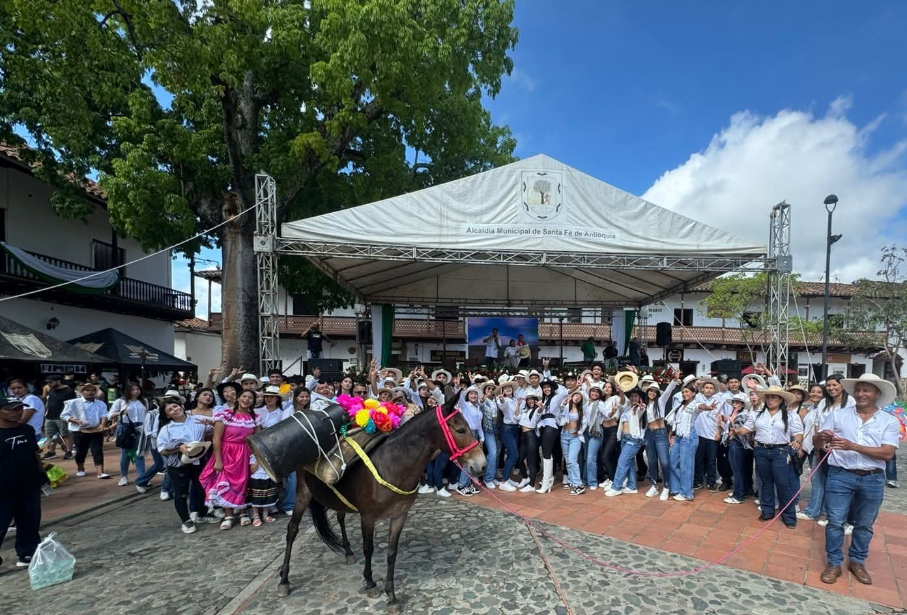

PARTICIPACION DEL COLEGIO SAN LUIS GONZAGA EL 11 DE AGOSTO
En el marco de la celebración del Día de la Independencia de Antioquia, nuestra institución participó en las actividades organizadas por el municipio, destacando el compromiso de la comunidad educativa con la preservación de las tradiciones y valores culturales de nuestra región. Los estudiantes de grados décimo y undécimo hicieron presencia en la muestra cultural y gastronómica, presentando productos y elementos propios de nuestra identidad antioqueña. Asimismo, estudiantes de diferentes grados participaron en el desfile, representando con orgullo las costumbres y símbolos de nuestro territorio. Agradecemos a los estudiantes, docentes y familias por su valiosa participación y por contribuir al fortalecimiento del sentido de pertenencia hacia nuestra tierra..
15 de Septiembre de 2025